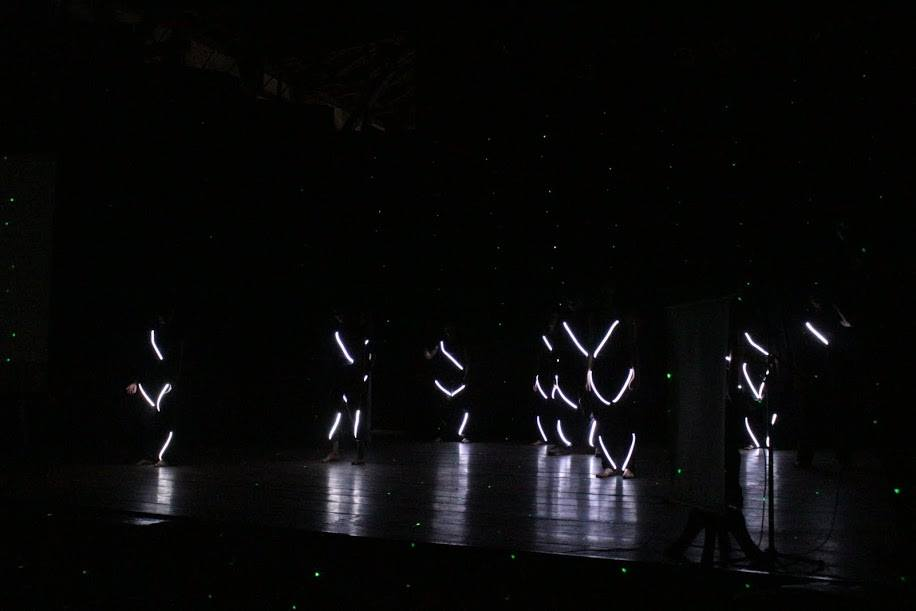

Programação
A Abertura do evento " Semana de Ciência e Tecnologia" proporcionado pelo IFMG Campus Sabará será na quarta-feira (26 de outubro)
na quadra da Escola Estadual Dona Bilu Figueiredo de 18:30h às 21:00h. Confira as atrações da abertura:
| Ação |
Horário |
Roda Literária com a Poeta Ana Elisa Ribeiro |
16:00 às 17:30 |
| Apresentação da Orquestra e Coral da Sociedade Musical Santa Cecília / Hino Nacional Discursos de Abertura Entrega do Prêmio do Concurso de Logomarca para a Semana C&T do IFMG Campus Sabará. |
18:30 às 19:30 |
| Palestra: “A Ciência Alimentando o Brasil: Utilização de subprodutos de frutas: melhoria do valor nutricional das preparações e redução do impacto ambiental” Palestrante: Sabrina Alves Ramos - Nutricionista Professora da Pontifícia Universidade Católica de Minas Gerais - PUC Minas. |
19:30 às 20:00 |
| Apresentações: Dança com LED Divulgação do Projeto SOS LITERATURA Apresentação de Pitchs. |
20:10 às 21:00 |
